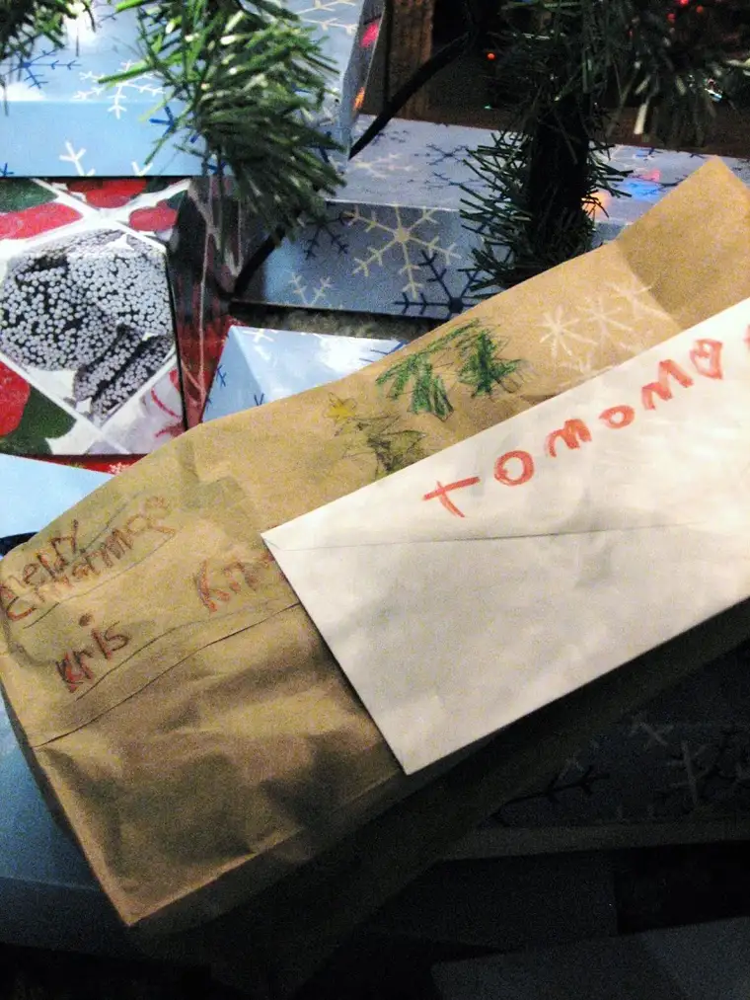
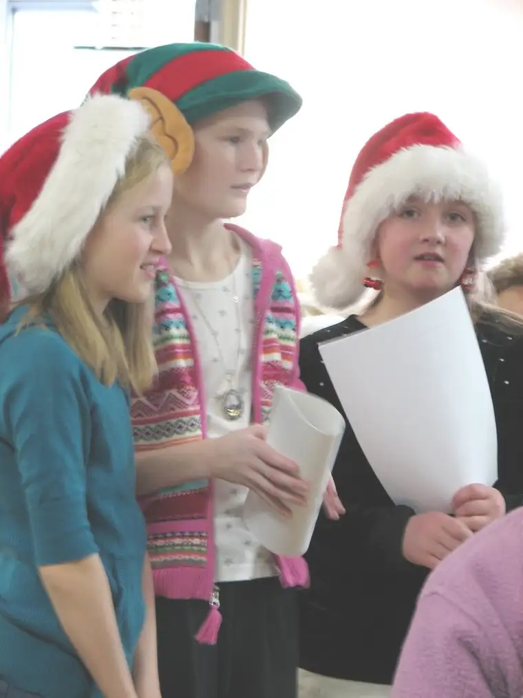
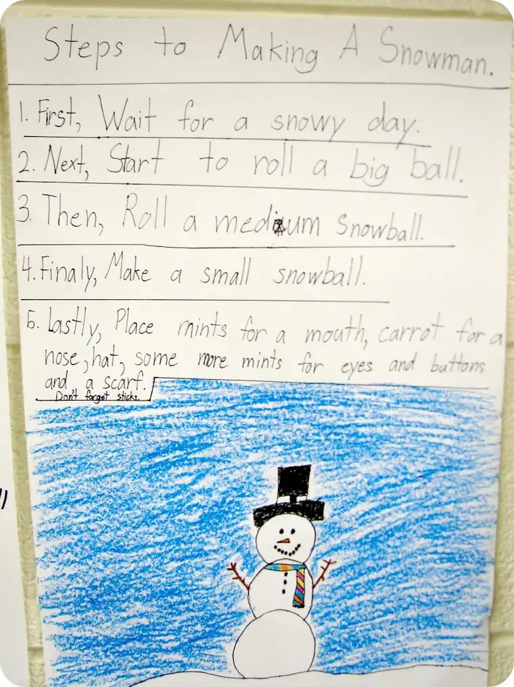

I already know what my favorite Christmas present is, and no, I didn’t cheat by sneakily prying into the package to glimpse its contents. I haven’t a clue what it is, in fact, but I know it’s my favorite. It’s my favorite because all day long, my 6-year-old followed me around the house and talked incessantly about this gift he’d made for me at school. “But you can’t open it until Christmas, Mom, because Mrs. S. said so.” A little bit later, he returned. “Mom, how many days until Christmas?” When I told him, his eyes lit up. “That means only five more days and you can open the present I made for you! I hope you like it, Mom.” Some time passed, and he approached me again. “Mom, I need a letter thing.” “What do you mean…letter thing?” “You know, one of those things to put mail in?” “Oh, an envelope?” “Yes, an envelope!” he said with enthusiasm. “Okay, here’s an envelope.” Some more time passed and he was back again. “Mom, do you have some tape? I really need tape.” (Pause…) “I’m not sure where the tape is.” “Well, I really need some. It’s for your present.” By this time, the heartfelt intention of my young son was quickly engulfing me. All day he’d been following me around, excited beyond belief over the gift he’d made me — the gift that was absolutely, positively, without a doubt to wait until Christmas to be seen. He was high on anticipation, not on what he would receive on Christmas morning, but what he was going to be giving. A little while later, he asked if we could put the gifts I’d stacked on a little shelf under the tree. I’d avoided putting them under the tree so they wouldn’t get tampered with, or opened by our youngest “by accident,” or messed with by our cats. “Please, can we put the presents under the tree now?” In his hand was the handmade gift he’d brought home from school wrapped in a hand-decorated brown lunch bag. “Well, okay.” So he and his sisters arranged the gifts. When they were done, I came into the livingroom to take a look at how the gifts had been arranged, and the one for me was on top. Stuck to its exterior (he must have found the tape) was a card with my name on it and, next to that, a tiny heart. And I knew right then and there that this present was going to be, already was, in fact, my favorite of gifts this year. It is the gift of having understood that when we give, we receive, and when we receive in love, we give. This might seem like an mundane little story, but right now, my heart is brimming with joy over what I have witnessed today in my young son. I will never forget the Christmas he reminded me what giving is all about, and the joy that can be ours when we give, especially gifts from the heart, the most priceless gifts of all.
Later in the day, I received another gift when I accompanied a group of girls from my oldest daughter’s class to a nursing home to sing Christmas carols. Their sweet voices rang through the rec room and brought smiles to some of the residents and a few quiet tears to others. One man in the back knew every verse to every song and even had a few verses of his own to add — with a hint of Norwegian humor and dialect. What a treat that was for us!

And yesterday, while helping with the Christmas party in my younger daughter’s classroom, I found her assignment hanging on the wall with the rest of her classmates’ work. The assignment apparently was to make a list of how to do something, and she chose, “Steps to Making a Snowman.” I thought I’d post it here, just in case you are looking for something to do with all that snow we’ve accumulated so far this winter (even though technically winter hasn’t even begun yet).

Three gifts, one of them wrapped, all infinitely precious to me.
{kind=link}
{kind=link}
{kind=link}